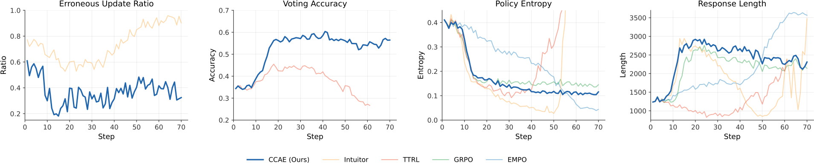

同一道题可以生成多条推理。CCAE 用模型对每条推理的自信程度衡量证据强度，再根据答案在组内的分布调整更新方向。在 Qwen3-4B-Base 上，用 7,500 道无标签数学题训练后，六项推理评测的平均 Pass@1 达到 52.2%，比表现最好的无标签基线高 5.0 个百分点。
同一组推理，两种可能出错的线索
给定一道没有标准答案的题，模型仍能观察到两件事：生成每一步时，词表上的概率有多集中；生成结束后，有多少条推理给出了相同答案。前者反映生成过程的自信程度，后者反映不同采样之间的一致性。
当模型熟练地重复错误步骤时，自信度仍然很高。同一个误解也可能让多数采样走向同一个错误答案。CCAE 把问题放在 GRPO 的优势估计这一步：每条样本应该得到多大的更新权重，答案共识又在什么条件下足以改变更新方向？
先筛选推理轨迹，再用答案共识校准
对每条轨迹，先在各生成位置计算从均匀词表分布到模型预测分布的 KL 散度，再取平均，并在同题采样组内标准化为 z。将等价答案聚类，用最大簇的频率相对均匀分布的偏离程度计算 r。各簇大小接近时 r 接近 0，所有回答一致时 r 取 1。
只有 z > 1 − r 的轨迹进入更新。通过门槛后，自信度给出的权重为 z²，再乘 (1 − r) + rv，其中 v 衡量该答案簇相对均匀分布的支持度。共识弱时，只有特别自信的轨迹能通过；共识强时，支持度低的答案可能得到负优势。整个估计器直接复用 GRPO 的采样结果，无须训练奖励模型。

六项推理评测上的结果
在 MATH-Train 上训练后，CCAE 比表现最好的无标签基线分别高 5.0 个百分点（4B）和 4.3 个百分点（8B），平均成绩接近使用标准答案训练的 GRPO。
更难的 DAPO-14k-MATH 提供了不同的检验。CCAE 的最终检查点得分 52.1%。三个无标签基线均在训练中出现性能崩溃，论文用真实标签为每个基线挑选崩溃前的最佳检查点。其中表现最好的是 INTUITOR（49.0%），与 CCAE 相差 3.1 个百分点。论文中最大的 11.1 个百分点差距对应 EMPO（41.0%）。
| 训练集 / Qwen3-Base | 最佳无标签基线 | CCAE | 有监督 GRPO |
|---|---|---|---|
| MATH-Train · 4B | 47.2 | 52.2 | 52.0 |
| MATH-Train · 8B | 50.3 | 54.6 | 54.3 |
| DAPO-14k-MATH · 4B | 49.0 | 52.1 | 54.1 |
共识校准何时重要
论文表 5 对 DAPO-14k-MATH 做了消融。固定 r = 1，让每道题都充分采信投票，平均成绩从 52.1% 降至 43.8%。在另一组消融中，单独去掉自信度证据因子，平均成绩降至 40.0%。这些实验区分了两个设计的作用：选择哪些轨迹参与更新，以及投票对这些轨迹有多大影响。
开放式回答对“答案相同”的判定提出了额外要求。在 Natural Reasoning 实验中，研究者提取最终答案，用双向语义蕴含把等价表述归为同一簇。按此协议训练 Qwen3-4B-Base，MMLU-Pro 总体正确率达到 56.4%，高于最强无标签基线的 51.1%。迁移到新任务时，能否稳定识别等价答案是一个实际条件。

引用
BibTeX
@inproceedings{yang-etal-2026-consistency,
title = "Consistency-Calibrated Advantage Estimation for Label-Free Reinforcement Learning",
author = "Yang, Meng and
Zhao, Yongle and
Zhang, Zhiyang and
Jiang, Xiaorui and
Liang, Peirou and
Chen, Furui and
Xie, Yin and
Feng, Ziyong",
editor = "Lee, Hung-Yi and
Dev, Sunipa and
Li, Junyi Jessy and
Elliott, Desmond",
booktitle = "Proceedings of the 2026 Conference on Empirical Methods in Natural Language Processing",
month = oct,
year = "2026",
address = "Budapest, Hungary",
publisher = "Association for Computational Linguistics",
url = "https://aclanthology.org/2026.emnlp-main.2484/",
doi = "10.18653/2026.emnlp-main.2484",
pages = "56413--56425",
ISBN = "979-8-89176-459-0"
}